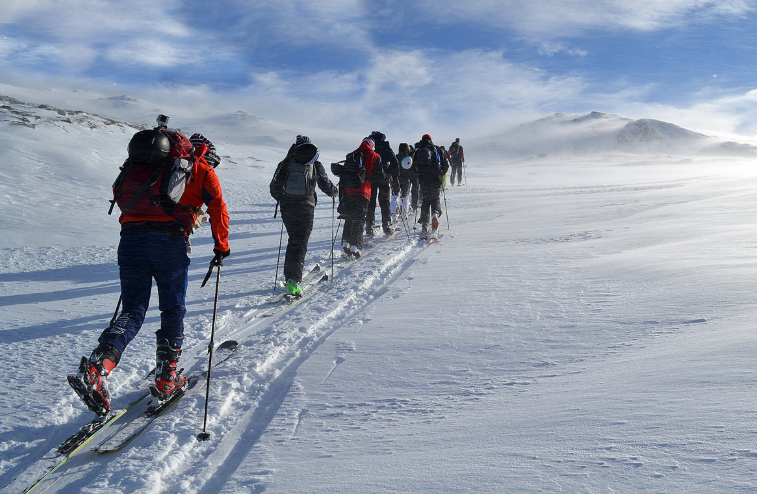

للتعبئة بكفاءة
مثلما هو الحال مع الملابس، يجب أن تكون حقيبتك مناسبة للطقس والنشاط الذي تقوم به. من الأفضل دائماً استخدام حقيبة ظهر عند قضاء الوقت في الهواء الطلق. ذلك لأن حقيبة الظهر توزع الوزن بشكل جيد، ولا تعيق حركتك، وتتيح لك حرية استخدام يديك.
أثناء رحلة التزلج على الجليد، ستحتاج إلى حقيبة ظهر أكبر قليلاً.
اختيار حقيبة الظهر
هناك العديد من الأنواع والأحجام المختلفة لحقائب الظهر. بعض الحقائب مخصصة لاستخدامات معينة. من المهم اختيار حقيبة ظهر تناسب الغرض منها. أهم شيء هو أن تجد حقيبة ظهر مريحة ومناسبة لك شخصياً. كلما كنت أكبر حجماً، يمكنك حمل حقيبة ظهر أكبر حجماً أيضاً.
من الأفضل أن توضع أغراضك داخل حقيبة الظهر حتى لا تضطر إلى ربط أشياء متفرقة على الخارج. إذا كان الطقس جميلاً، يمكن تثبيت أجزاء خفيفة من الأغراض على الجزء العلوي أو الجوانب، لكن من المهم تثبيتها جيداً حتى لا تتدلّى أو تتعلق بشيء ما.
إذا كان الجو بارداً أو إذا كنت ستقضي عدة أيام في الخارج، فمن الأفضل أن تكون حقيبة الظهر كبيرة وتستوعب 40 لتراً أو أكثر. أما إذا كنت في يوم صيفي دافئ، فقد تكون حقيبة الظهر الصغيرة أفضل طالما كان بإمكانك وضع ما تحتاجه فيها.
إذا كان هناك احتمال لتبلل الحقيبة، يمكن استخدام غطاء مضاد للماء يوضع فوق الحقيبة. بعض حقائب الظهر تأتي مع غطاء مضاد للمطر، ويمكن أيضاً استخدام كيس قمامة لتغطية الحقيبة.
حقيبة ظهر مزودة بحزام خصر وحزام صدري مناسبة عندما تحمل أعباء أثقل أو تقوم بنشاط يتطلب حركة كثيرة، مثل التزلج على الجليد أو التزحلق على الجليد. فهذه الأحزمة تساعد على توزيع الوزن وتثبيت الحقيبة جيداً على الجسم.